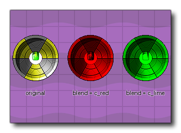

Définir la couleur de l'instance Définir la couleur de l'instance
Définir la couleur de l'instance Définir la couleur de l'instance Ce bloc d'action définit le image_blend couleur pour "fusionner" avec le sprite d'instance. La valeur par défaut est -1 (ce qui représente la couleur blanche) et cela dessine l'image-objet en n'utilisant aucun fondu. Toute autre valeur (y compris les constantes de couleur internes comme c_red, ou c_aqua ) fusionnera la couleur spécifiée avec l'image-objet d'origine. Notez que pour que les modifications de cette action soient visibles, l'instance ne doit comporter aucun événement draw (et donc GameMaker Studio 2 dessine l'image-objet par défaut) ou être dessiné à l'aide de Draw Self action. Il est important de noter également que vous devriez essayer de limiter la fusion sur les plates-formes Windows 8 (JavaScript) ou HTML5 (à moins d'utiliser WebGL), car chaque image-objet doit être mise en cache séparément, ce qui peut affecter les performances. 

Argument La description Colour La nouvelle couleur de fusion à utiliser (cliquer sur l'échantillon de couleur ouvrira la fenêtre du sélecteur de couleurs).
Le code de bloc d'action ci-dessus définit une nouvelle image-objet ainsi qu'un certain nombre d'autres propriétés pour l'affichage de cette image-objet, y compris la définition de la couleur de fusion en rose.